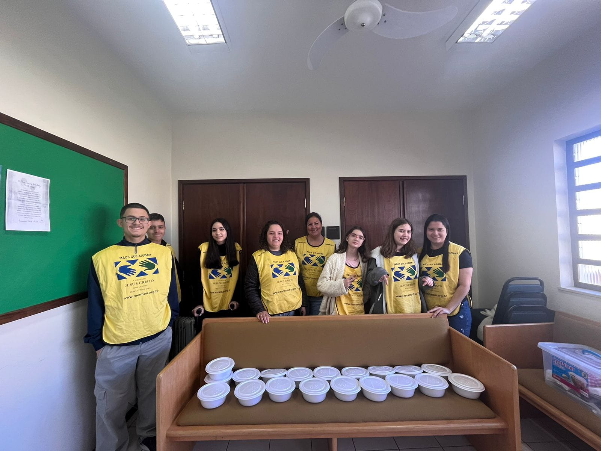

Confecção de marmitas
Como uma forma de ajudar os mais necessitatos e incentivar o amor ao próximo realizamos atividades envolvendo doações de alimentos, roupas, produtos de higiene, etc.


Pequenas reformas
Foi organizado um grupo de homens para reformar a entrada da casa de uma irmã com problemas para se locomover. A entrada do terreno era de difícil acesso para ela, então foi feita uma pequena rampa para solucionar esse grande problema.